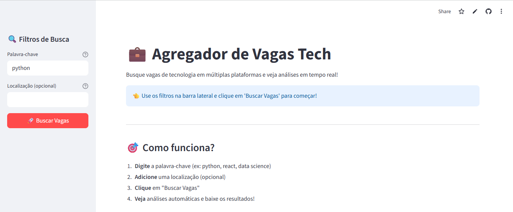

Descrição
Aplicativo que busca e exibe vagas de tecnologia usando a API JSearch, com interface interativa em Streamlit.
Destaques
- Integração com API externa para vagas de emprego
- Filtragem e exibição interativa de vagas
- Deploy online via Streamlit Cloud
Tecnologias / Ferramentas
Python
Streamlit
APIs
GitHub
Arquivos e Recursos
← Voltar aos Projetos